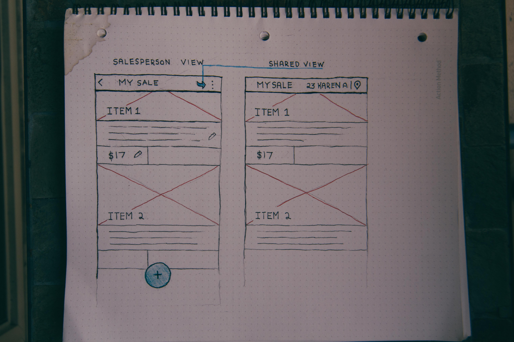

Google×Design
This case study was a design challenge for an
interaction design role
I applied to at Google.
the problem
"Preparing your own garage sale is often a daunting task. It’s also difficult for potential buyers to discover your merchandise. Design an experience that makes it easier for sellers to intelligently inventory their goods, and helps bargain hunters find the needle in a haystack."
The particular part of the prompt that stood out to me was:
Design an experience that makes it easier for sellers to intelligently inventory their goods, and helps bargain hunters find the needle in a haystack.
Based on the prompt I hypothesized that I would need to learn about 2 seperate groups of users– the Salesperson and the Bargain Hunter.
CONTEXTUAL INQUIRY
I decided to venture out and do some contextual inquiry at a few yard/garage sales I found around Oakland. Because it was a holiday weekend the it wasn't too hard to find them.
At a high level I was aiming to learn more about these 2 user groups. I created a small list of questions I was hoping to answer about each user group:
keep in mind that these were not the questions I asked real people.
- Before the sale how do they typically decide what to sell? How do they organize and inventory their goods?
- What channels of communication do they use to advetise and organize their sale?
- How do they typically look for and find yard sales? What makes them want to choose one sale over another?
- What motivates them to go to yard sales?
KEY FINDINGS / TAKEAWAYS
I was able to talk to 5 salespeople so I chose to focus my findings on the salesperson experience.

the more the merrier!
Key Finding: Almost all of the sales I came across had groups of people running them. This group in particular were really enjoying themselves.
My Takeaway: When planning a yard sale, salespeople almost never do it solo. Having more for sale attracts more customers, so trying to get your friends to bring their wares is always a "win-win".
Craigslist & Facebook Use
Key Finding: All salespeople I interviewed had advertised their yard sale on social media. Craiglist was the most commonly used, with Facebook close behind.
The surprising thing for me for me here was to find that most of the posts had no pictures of their wares. All sales people said they would have posted pictures if they had time.
Most commonly the sales people would plan the sale from their laptop.
My Takeaway: The experience I create would need to be able to integrate into these channels. If my experience we're to support photos then I would have to make that experience as seemless as possible.

Sharing via Social Media
Key Finding: This group of salespeople were attempting to target a particular type of person to buy this box of goodies by posting a picture of the item in a Private Lyft Driver Facebook group.
My Takeaway: I was inspired by the idea of sharing a list of items with a selected group via social media. I wanted to work this idea into my user flow.

Prices are changing all the time!
Key Finding: This woman who claimed to be a "Yard Sale Expert" said that the prices of her wares change all the time throughout the sale. "The goal of a yard sale is to sell all your junk. If you don't sell all of you're wares by the end of the day then its not a successful sale–even if that means giving things away."
My Takeaway: If this indeed matches the mental model of the salesperson then the experience that I create needs to account this price variable.
User Flow
I was able to talk to 5 salespeople so I chose to focus my findings on the salesperson experience.
the more the merrier!
Key Finding: Almost all of the sales I came across had groups of people running them. This group in particular were really enjoying themselves.
My Takeaway: When planning a yard sale, salespeople almost never do it solo. Having more for sale attracts more customers, so trying to get your friends to bring their wares is always a "win-win".
High Fidelity Prototype
For the higher fidelity mock-ups I decided to use Google's Material Design template for the card based design: www.getmdl.io.